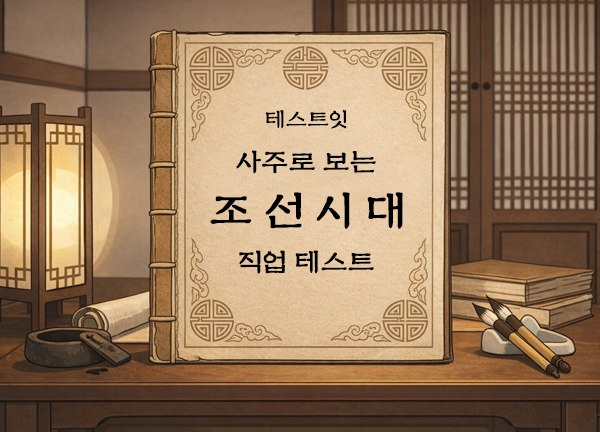

테스트잇
성격
얼굴
그외
사주
테스트잇 조선시대 직업 테스트.exe
_
X

테스트 시작하기
테스트잇 조선시대 직업 테스트.exe
_
X
유저 데이터 입력
정확한 스캔을 위해 정보를 입력하세요.
이름 (또는 닉네임)
생년월일 (양력)
결과 스캔하기
테스트잇 조선시대 직업 테스트
_
X
User_ID :
ㅇㅇㅇ
조선시대 직업
조선시대 ㅇㅇ(ㅇㅇ) 일주
성격 특징 요약
조선시대 호적 기록
직업 설명
결과 이미지 저장하기
다시 해보기
다른 테스트 해보기
테스트 공유하기
이미지를 꾹 눌러서 저장해주세요.
닫기